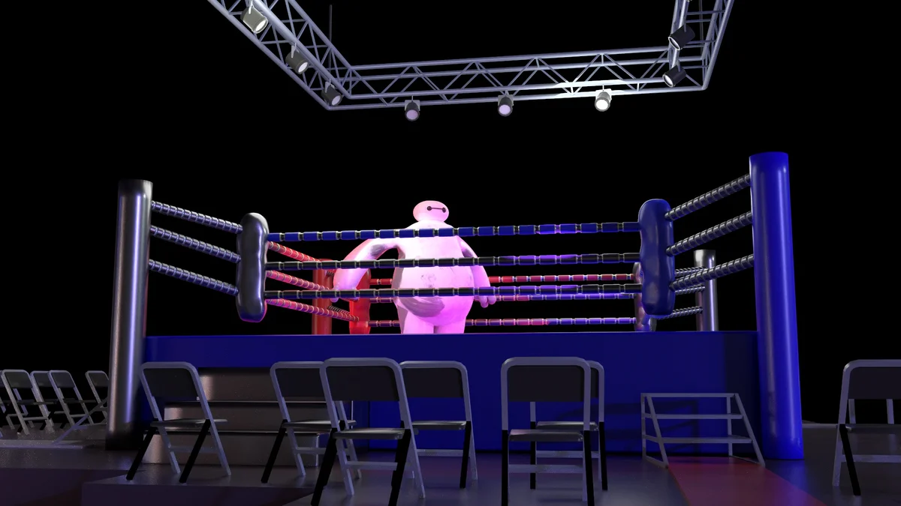
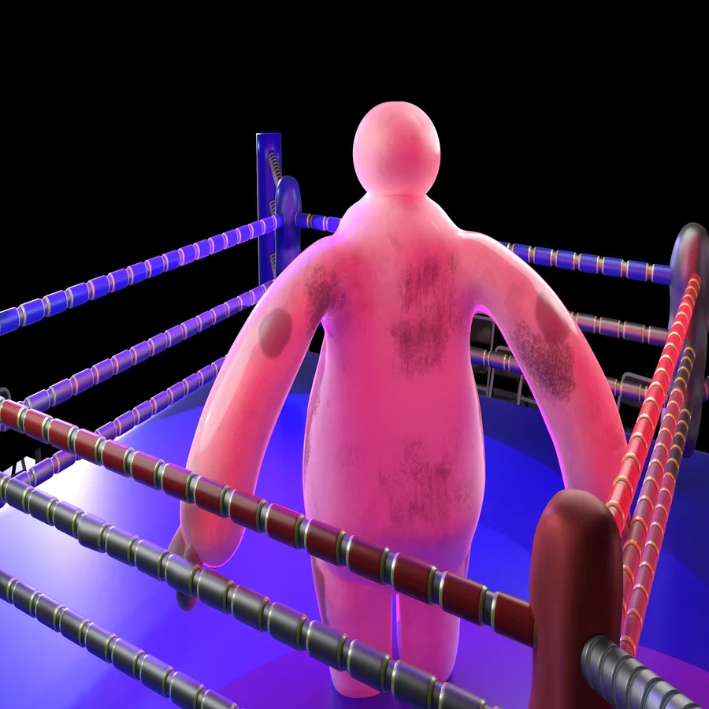
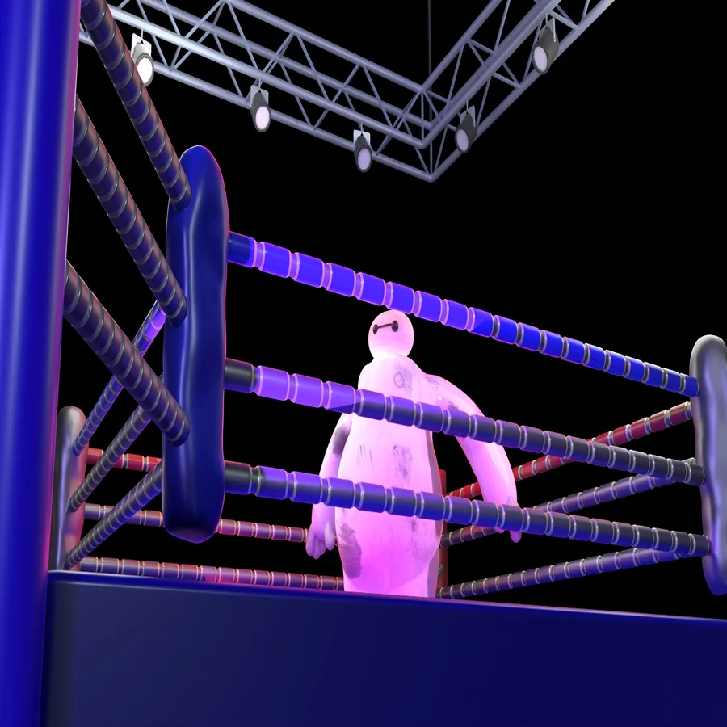
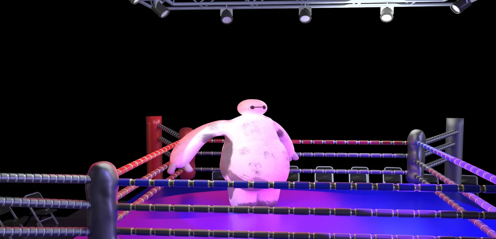

← volver a proyectos
proyecto — diseño multimedial
Modelado Baymax
Modelado 3D de Baymax, ambientado en un ring de boxeo.
Modelado 3D de Baymax, ambientado en un ring de boxeo.

Modelado tridimensional de Baymax, el personaje de Grandes Héroes, ubicado en la escena de un ring de boxeo. El desafío principal fue lograr que el material de su cuerpo se sintiera blando y orgánico, trabajando el shading y las texturas de suciedad sobre la superficie para darle un aspecto más gastado y realista. También cuidé la ambientación de la escena —la iluminación tipo spot, las cuerdas y el entorno del ring— para reforzar el contraste entre lo entrañable del personaje y lo agresivo del contexto que lo rodea.



